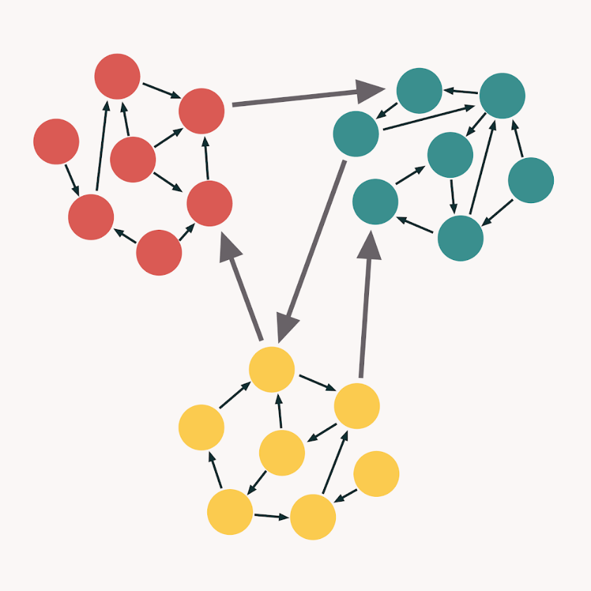
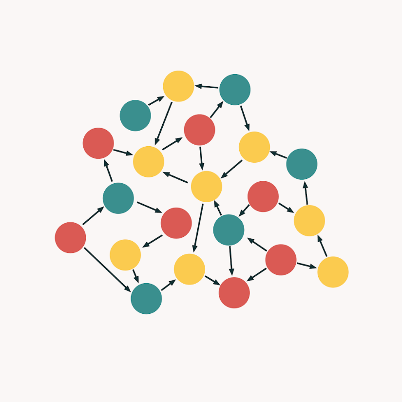
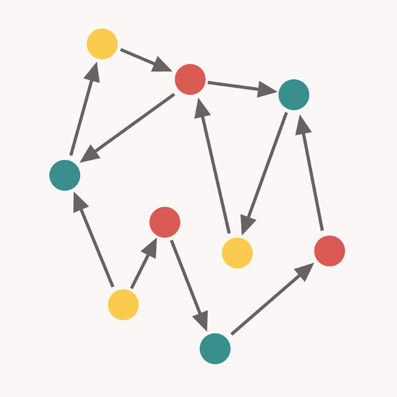
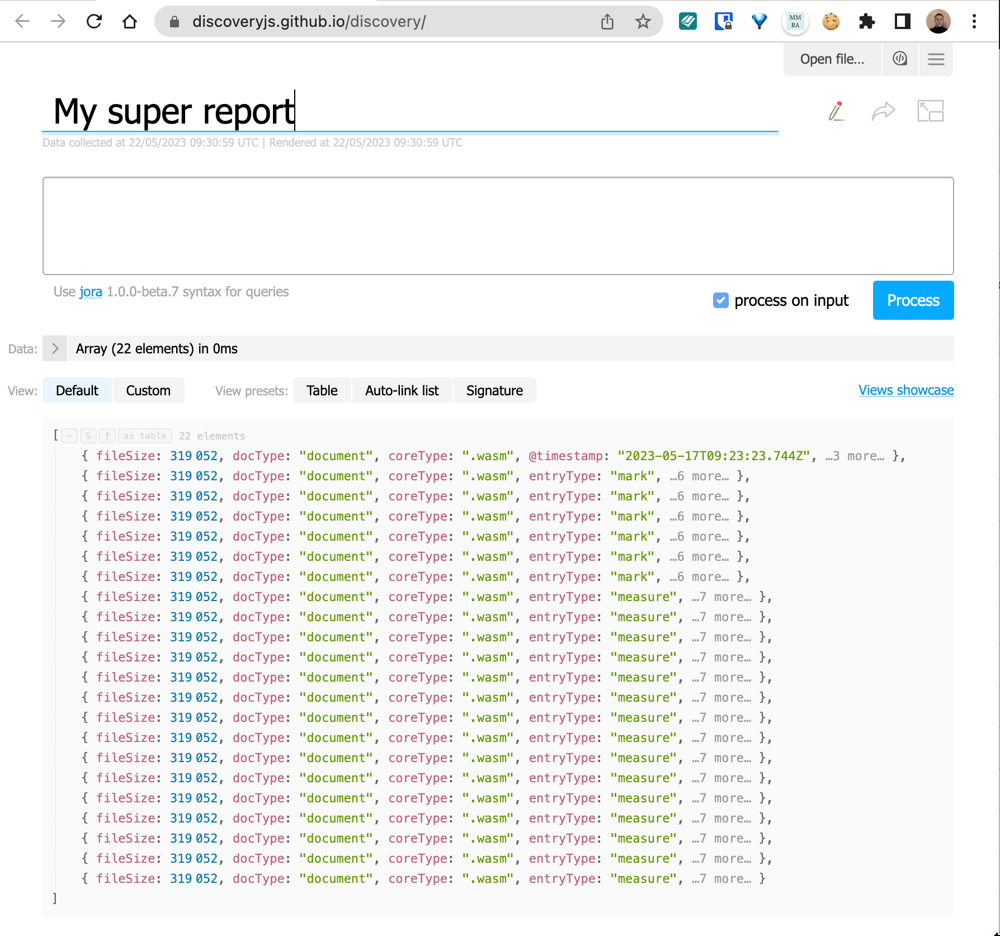

Борьба
с ветряными мельницамии
Как жить с техническим долгом
Как жить с техническим долгом
Как жить с техническим долгом
Как я живу с техническим долгом
|
|
Золотых Алексей
@zolotyh Github | Telegram | Twitter |
МойОфис

Тяжелое утро c HolyJS

План
- Кто кому и что должен
- Где встречается
- Какой бывает
- Как бороться
- Полезняшки
1. Кто кому и что должен
Технический долг
это метафора программной инженерии, обозначающая накопленные в программном коде или архитектуре проблемы, связанные с пренебрежением к качеству при разработке программного обеспечения и вызывающие дополнительные затраты труда в будущем
накопленные в программном коде или архитектуре проблемы, связанные с пренебрежением к качеству
Срезаем углы => берем технический долг
это метафора программной инженерии, обозначающая накопленные в программном коде или архитектуре проблемы, связанные с пренебрежением к качеству при разработке программного обеспечения и вызывающие дополнительные затраты труда в будущем
это метафора программной инженерии, обозначающая накопленные в программном коде или архитектуре проблемы, связанные с пренебрежением к качеству при разработке программного обеспечения и вызывающие дополнительные затраты труда в будущем
Не жаль мне лет, растраченных напрасно,
Не жаль души сиреневую цветь.
В саду горит костер рябины красной,
Но никого не может он согреть.
Не жаль мне лет, растраченных напрасно,
Не жаль души сиреневую цветь.
В саду горит костер рябины красной,
Но никого не может он согреть.
Не жаль мне лет, растраченных напрасно,
Не жаль души сиреневую цветь.
В саду горит костер рябины красной,
Но никого не может он согреть.
Проблема номер ноль
Второе начало термодинамики
Проблема номер ноль
Энтропия изолированных систем стремится к максимуму.
Проблема номер ноль
Энтропия изолированных систем стремится к максимуму.
Любой ваш код или решение рано или поздно превратиться в давнокод и легаси
2. Где встречается
Чтобы не было технического долга и легаси нужно рефакторить
Онтология технического долга
- Architecture Debt
- Build Debt
- Code Debt
- Defect Debt
- Design Debt
- Documentation Debt
- Infrastructure Debt
- People Debt
- Process Debt
- Requirement Debt
- Service Debt
- Test Automation Debt
- Test Debt
Онтология технического долга
- Architecture Debt
- Code Debt
- Design Debt
Онтология технического долга
Architecture Debt- Code Debt
- Design Debt
3. Какой бывает
Обоснованный и безрассудный
Как можно набрать техдолг на пустом месте
- Redux => MobX
- MomentJS => DayJS
- Старый подход => Новый подход
Как это бывает...
- MobX лучше Redux
- Redux => MobX — технический долг
- Если не следить за техдолгом, проект невозможно будет поддерживать
- Я пошел переписывать
- Приходи со своими фичами через полгода
— Сейчас у нас другие приоритеты,
вернемся к этому разговору чуть позже
Есть и такое мнение

Известный или неизвестный
Известный или неизвестный
Мы не можем бороться с проблемой, если мы о ней не знаем
В это время в Jira...
1 of 100 000 tasks
Известный или неизвестный нам
Мы не можем бороться с проблемой, если мы о ней не знаем
Известный или неизвестный нам
Управляемый или неуправляемый
Мы не можем бороться с проблемой, если мы о ней не знаем
| необоснованный управляемый |
обоснованный управляемый |
| необоснованный неуправляемый |
обоснованный неуправляемый |
| необоснованный управляемый |
обоснованный управляемый |
| необоснованный неуправляемый |
обоснованный неуправляемый |
4. Как бороться
Борьба с техдолгом это процесс
План
- Ищем
- Оцениваем
- Принимаем решение
- Делаем
- Рефлексируем
- Мониторим
Поиск
- Спросить у команды (субъективно)
- Автоматический анализ
ASA

Что ищем?
- Code style
- Антипаттерны
- CodeSmells
- Ошибки безопасности
- DRY
Метрики кода
Low Coupling (низкая связанность) и High Cohesion (высокое зацепление)

1. Идеальная ситуация
2. Все в одном
3. Неправильные границы

4. Мастер SOLID
Как можно найти?
- Сложность кода (cyclomatic complexity vs cognitive complexity)
- Текучесть (code churn)
- Кол-во зависимостей
- Размер файла в строках
- Покрытие тестами
Chidamber & Kemerer object-oriented metrics suite (shorturl.at/kOS28)
- WMC Weighted Methods Per Class
- DIT Depth of Inheritance Tree
- NOC Number of Children
- CBO Coupling between Object Classes
- RFC and RFC´ Response for a Class
- LCOM(4) Lack of Cohesion of Methods
Code Complexity
$ npx code-complexity . --sort=score --limit=3
┌──────────────────────────────┬────────────┬───────┬───────┐
│ file │ complexity │ churn │ score │
├──────────────────────────────┼────────────┼───────┼───────┤
│ src/cli.ts │ 103 │ 8 │ 824 │
├──────────────────────────────┼────────────┼───────┼───────┤
│ test/code-complexity.test.ts │ 107 │ 7 │ 749 │
├──────────────────────────────┼────────────┼───────┼───────┤
│ .idea/workspace.xml │ 123 │ 6 │ 738 │
└──────────────────────────────┴────────────┴───────┴───────┘
@deprecated
/**
* @deprecated Please use {@link NonDeprecatedComponent}
*/
export const DeprecatedComponent = () => {
const callback = useCallback(() => {}, []);
return <div onClick={callback}></div>;
}
Semgrep
Структурный поиск по коду
Angular 1.*
rules:
- id: legacy_metrics.angular_modules
pattern-regex: angular(?:(?:\n\s*)|)\.module|ngInject
message: Angular module was found
languages:
- javascript
- typescript
severity: WARNING
Grafana + Clickhouse

План
- Ищем
- Оцениваем
- Принимаем решение
Как принимать решения
Упавление рисками
- 80/20
- Квадрат Декарта
- SWOT Анализ
План
- Ищем
- Оцениваем
- Принимаем решение
- Планируем
Планируем (Big Design Up Front)
План
- Ищем
- Оцениваем
- Принимаем решение
- Планируем
- Делаем
- Рефлексируем
- Мониторим
5. Полезняшки
Sonarqube Community Branch Plugin
https://github.com/mc1arke/sonarqube-community-branch-plugin
version: "3.8"
services:
sonarqube:
depends_on:
- db
image: mc1arke/sonarqube-with-community-branch-plugin:${SONARQUBE_VERSION}
build:
context: .
dockerfile: ${DOCKERFILE}
args:
SONARQUBE_VERSION: ${SONARQUBE_VERSION}
PLUGIN_VERSION: ${PLUGIN_VERSION}
container_name: sonarqube
ports:
- 9000:9000
networks:
- sonarnet
environment:
- SONAR_JDBC_URL=jdbc:postgresql://db:5432/sonar
- SONAR_JDBC_USERNAME=sonar
- SONAR_JDBC_PASSWORD=sonar
volumes:
- sonarqube_conf:/opt/sonarqube/conf
- sonarqube_data:/opt/sonarqube/data
db:
image: postgres:11
container_name: postgres
networks:
- sonarnet
environment:
- POSTGRES_USER=sonar
- POSTGRES_PASSWORD=sonar
volumes:
- postgresql:/var/lib/postgresql
- postgresql_data:/var/lib/postgresql/data
volumes:
sonarqube_conf:
sonarqube_data:
postgresql:
postgresql_data:
networks:
sonarnet:
Бас фактор
github.com/onigoetz/absorption
absorption /Users/onigoetz/Sites/Libs/crafty --weights weights.json --contributors contributors.json
Scanning ████████████████████████████████████████ | 100% | 492/492 files
The repository's absorption score is 16% fresh, 84% fading and 0% lost
Fresh/Fading knowledge
Name │ Total │ Fresh │ Fading
────────────────────┼──────────┼──────────┼──────────
Stéphane Goetz │ 99.51 % │ 15.67 % │ 83.83 %
Vitalii Shapovalov │ 0.14 % │ 0.14 % │ 0.00 %
Работаем с JSON
Другие тулы для структурного поиска
Zoomable Treemap
Выводы
- Технический долг — метафора
- Долг должен быть управляемым и осмысленным
- Измерения позволяют контролировать динамику
- Прозрачность повышает доверие
- Не нужно расчитываться по всем долгам
- Помни про правило номер 0
Спасибо!
|
Золотых Алексей
@zolotyh Github | Telegram | Twitter |